SafeRoute reads live crime data across the UK, US cities, Canada and Mexico City. Check how safe any area is in a tap, plan a route scored by real risk — severity, proximity, time of day — and walk the safer one. No accounts. No ads.
Download on the App Store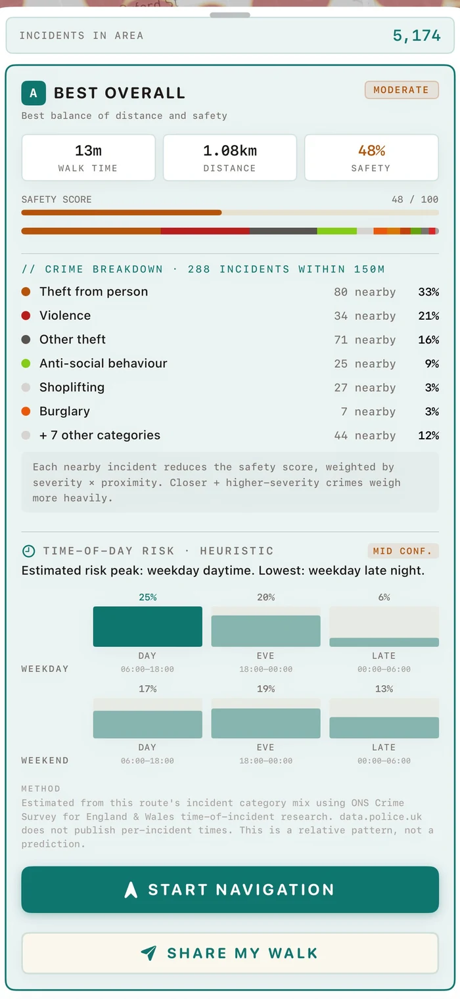
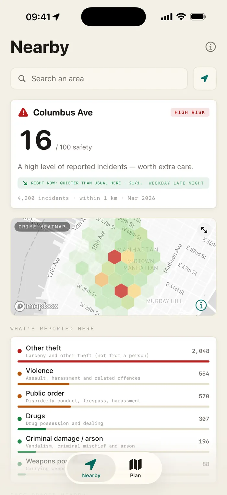
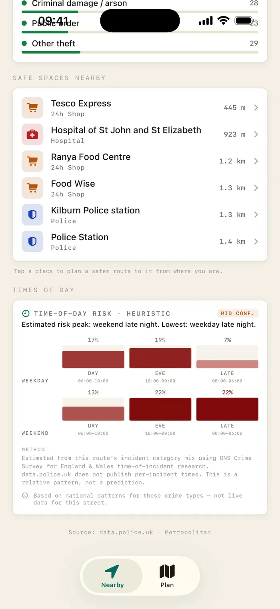
You don't always want a route — sometimes you just want to know. Open SafeRoute and the Nearby tab shows how safe where you are is right now: a score, a live heatmap, what's actually being reported, and the safe spaces around you.
Seeing where crime happened is not the same as knowing which way to walk. SafeRoute does the harder part: it turns the data into a route, and shows its working.
You get dots. You get a heatmap. Then you're left to squint at it and guess which street is the lesser risk — usually while you're already walking.
Every candidate route gets a safety score from severity × proximity × time-of-day. You see the number, the breakdown, and the route that balances it against distance — before you set off.
Open the app, check your area, then plan a route and read its safety score — the core flow, start to finish on iPhone.
Every route shows a 0–100 safety score with the full breakdown underneath: how many incidents are nearby, what kind, and how each one is weighted. Nothing is hidden behind a black box.
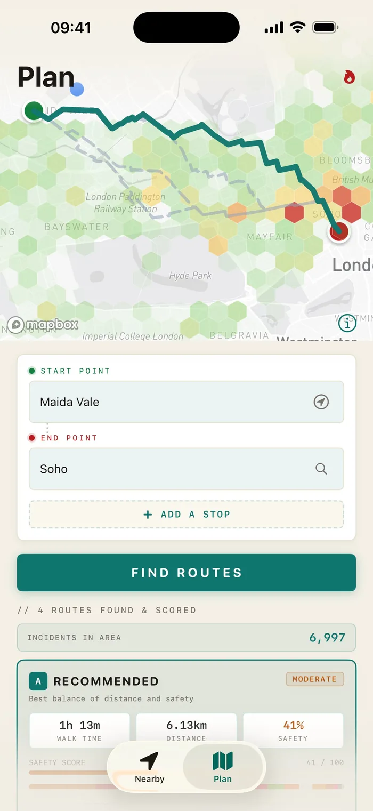
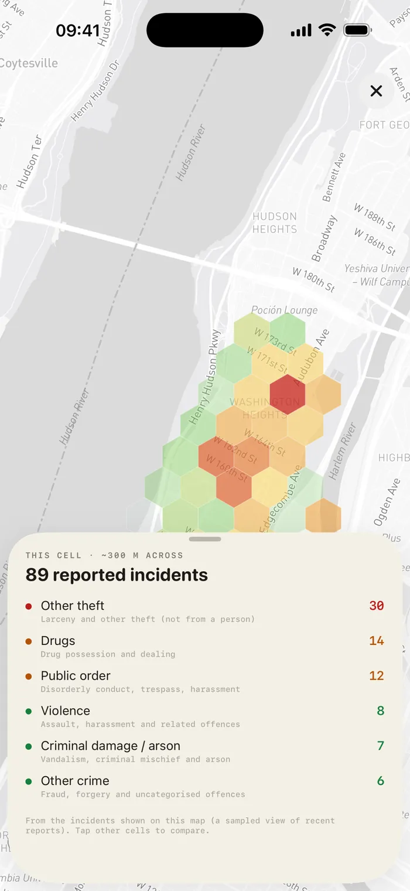
Plan from anywhere in a covered region — the UK, a US or Canadian city, or Mexico City. Add stops, swap start and end, and flip on the crime heatmap overlay to see exactly what the score is reading from.
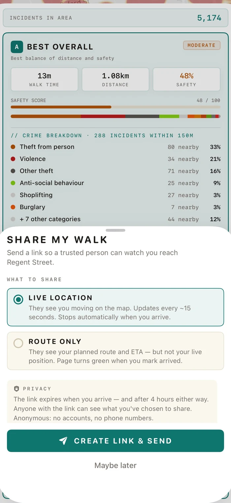
Send a trusted person a link. They see you reach your destination, then the link expires. No app for them to install, no account for either of you, no phone numbers collected.
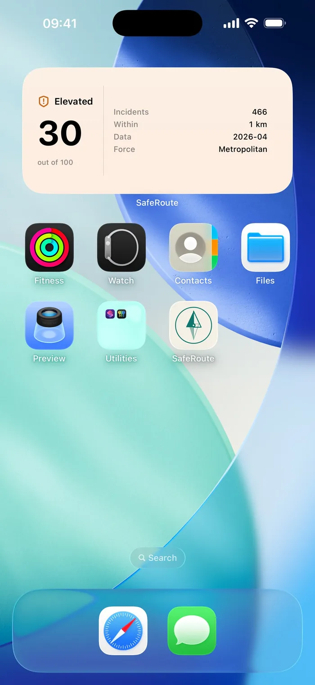
Add the Area Safety widget to your Home Screen or Lock Screen and the score is there before you even open the app — a glance tells you whether tonight's a normal night or one to stay switched on for.
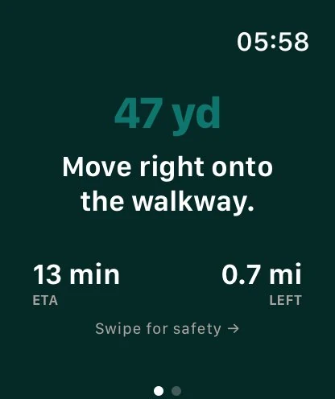
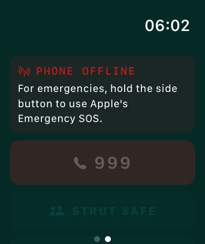
SafeRoute is built natively for Apple Watch and uses Live Activities, so the next direction is a glance away — you don't have to walk with your phone out.
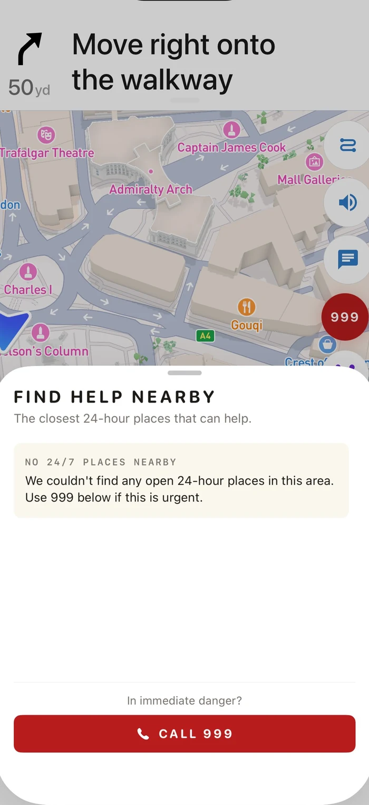
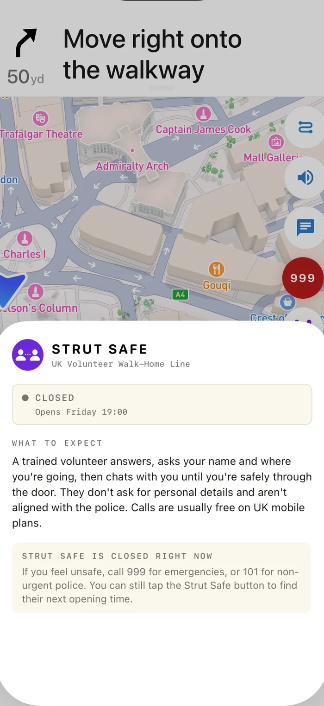
If a walk stops feeling right, SafeRoute surfaces the closest 24-hour places that can help — shops, police, hospitals — alongside your local emergency number (999 in the UK, 911 in the US, Canada and Mexico) and, in the UK, the volunteer walk-home line.
The same Nearby checks, crime-aware routing, scoring and live navigation — laid out for the bigger display.
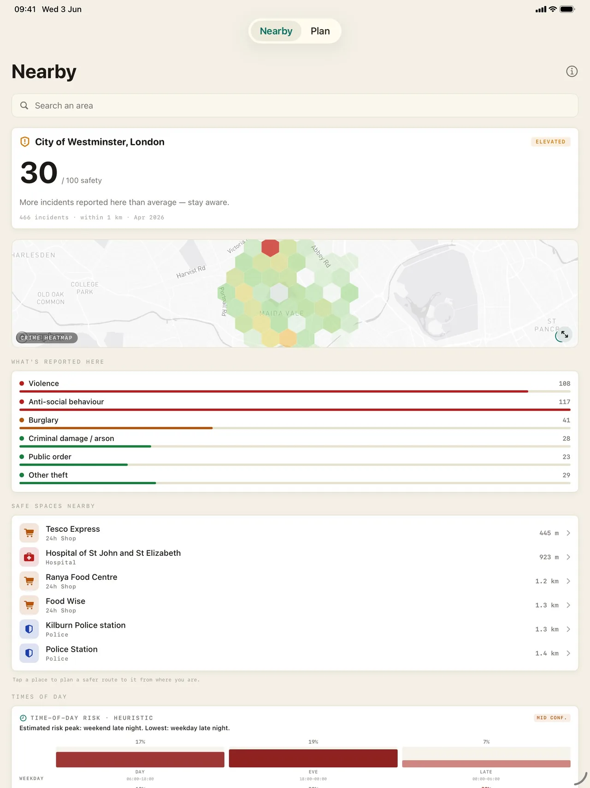
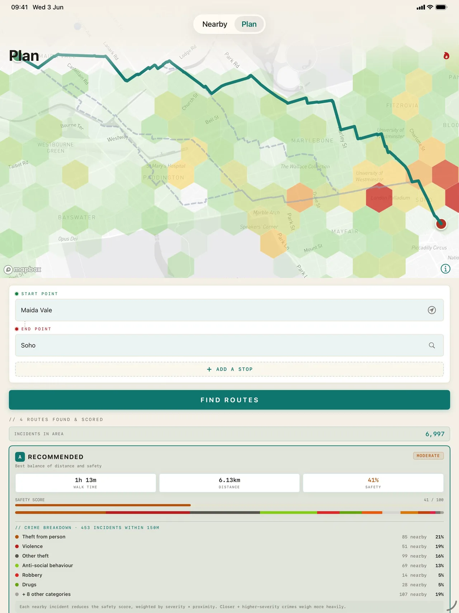
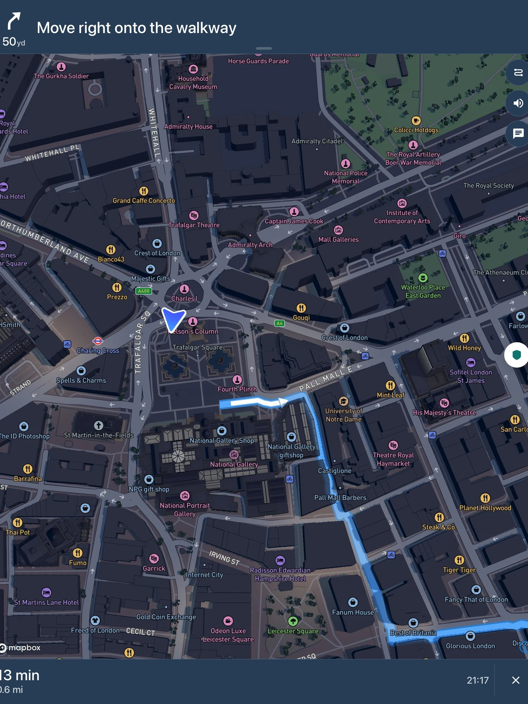
A tool that tracked your every walk would be its own risk. SafeRoute is built so it can't.
Nothing to sign up for. No email, no password, no profile — open the app and plan a walk.
No advertising identifiers, no data brokers, no cross-app tracking. The only analytics are anonymous, opt-out usage counts — never your searches, routes, or location.
Crime data comes from public sources — data.police.uk (UK), each city's open data in the US and Canada, and the FGJ via Hoyo de Crimen in Mexico City — all named in the app, so you can check the working.
Safety scoring is built on each place's own official open crime data. Outside a covered area, routing and search still work — the safety score simply waits until you're somewhere we cover.
England, Wales & Northern Ireland — every territorial police force, via data.police.uk.
New York · Los Angeles · Chicago · Houston · Dallas · Fort Worth · Philadelphia · San Diego · San Francisco · Washington D.C. · Boston · Seattle · Denver · Detroit · Baltimore · Las Vegas · Memphis · Nashville · Charlotte · Minneapolis · Cleveland · Kansas City · New Orleans · Tucson · Long Beach · Hartford
Toronto · Vancouver
Mexico City
Type any street, neighborhood or landmark and get its safety index on a live crime map — scored 0–100 from the same official police data the app routes on. Free, in your browser.
Live crime mapCheck any address →Or jump to one of our in-depth city pages
1,222 areas across ten cities · New York · London · Chicago · LA · San Francisco · Seattle · Toronto · Washington DC · Boston · Philadelphia
How good is the data behind these pages? We measured all 30 cities — and found two British police forces that publish essentially no crime data at all.
SafeRoute is live on the App Store. Free, no accounts, no ads — just the safer route home.
Download on the App Store